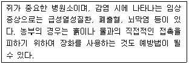
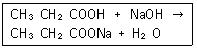

식품기사 (2015-03-08 기출문제)
1과목: 식품위생학
1. 식품을 경유하여 인체에 들어왔을 때 반감기가 길고 칼슘과 유사하여 뼈에 축적되며, 백혈병을 유발할 수 있는 방사선 핵종은?
- 스트론튬 90 (Sr-90)
- 바륨 140 (Ba-140)
- 요오드 131 (I-131)
- 코발트 60 (Co-60)
(정답률: 81%)

2. 식품공전 상 장기보존식품의 기준 및 규격에 의한 병·통조림식품의 주석 기준은? (단, 알루미늄 캔과 산성 통조림 제외)
- 60(mg/kg)이하
- 90(mg/kg)이하
- 120(mg/kg)이하
- 150(mg/kg)이하
(정답률: 61%)
3. A군 β-용혈성 연쇄상구균에 의해서 발병하는 경구전염병은?
- 디프테리아
- 성홍열
- 전염성설사증
- 천열
(정답률: 66%)
4. 식품 내에서 곰팡이의 발생 조건에 대한 설명으로 부적절한 것은?
- 세균의 발육이 어려운 곳에서도 발생한다.
- 고농도의 당을 함유하는 식품에서도 발생한다.
- 항생제를 첨가한 식품에서도 잘 발육한다.
- 우유가 변패되는 경우 세균보다 먼저 발생한다.
(정답률: 75%)
5. 다음 중 차아염소산나트륨 소독 시 비해리형 차아염소산(HClO)으로 존재하는 양(%)이 가장 많을 때의 pH는?
- pH 4.0
- pH 6.0
- pH 8.0
- pH 10.0
(정답률: 80%)
6. 보존료의 사용 목적에 대한 설명으로 틀린 것은?
- 식품의 부패방지로 인한 선도 유지를 위하여 사용한다.
- 부패 미생물에 대한 정균작용 효과를 이용한다.
- 식품 중의 효소작용을 증진시켜 품질을 개선한다.
- 식품의 유통 단계에 있어서 안전성을 확보하기 위하여 사용한다.
(정답률: 83%)
7. 다음 중 유독성분과 연결이 옳은 것은?
- 감자 - muscarine
- 면실유 - gossypol
- 수수 - amygdalin
- 독미나리 - ergotoxin
(정답률: 87%)
8. 소독제와 소독 시 사용하는 농도의 연결이 틀린 것은?
- 석탄산: 3~5% 수용액
- 승홍수: 0.1% 수용액
- 알코올: 36% 수용액
- 과산화수소: 3% 수용액
(정답률: 89%)
9. 미생물과 관련된 식품보존료로 사용되지 않는 것은?
- 데히드로초산(dehydroacetic acid)
- 소르빈산(sorbic acid)
- 안식향산(benzoic acid)
- 몰식자산 프로필(propyl gallate)
(정답률: 71%)
10. 다음 중 아래의 설명과 관계 깊은 인수공통 감염병은?

- 리스테리아증
- 렙토스피라증
- 돈단독
- 결핵
(정답률: 87%)
11. 표준한천배지(plate count agar)의 조성에 포함되지 않는 것은?
- Tryptone
- Yeast extract
- Dextrose
- Lactose
(정답률: 69%)
12. 미생물 검사를 요하는 검체의 채취 방법에 대한 설명으로 틀린 것은?
- 채취당시의 상태를 유지할 수 있도록 밀폐되는 용기·포장 등을 사용하여야 한다.
- 무균적으로 채취하더라도 검체를 소분하여서는 안 된다.
- 부득이한 경우를 제외하고는 정상적인 방법으로 보관·유통 중에 있는 것을 채취하여야 한다.
- 검체는 관련정보 및 특별수거계획에 따른 경우와 식품접객업소의 조리식품 등을 제외하고는 완전 포장된 것에서 채취하여야 한다.
(정답률: 80%)
13. 야토병의 원인균은?
- Bacillus anthracis
- Brucella melitensis
- Erysipelothrix rhusiopathiae
- Francisella tularensis
(정답률: 58%)
14. 다음 물질 중 발암성을 야기시키는 물질과 거리가 먼 것은?
- 벤조피렌
- 트리할로메탄
- 아플라톡신
- 마비성 패류독
(정답률: 76%)
15. 아래의 반응식에 의한 제조방법으로 만들어지는 식품첨가물명과 주요 용도를 옳게 나열한 것은?

- 카르복시메틸셀룰로오스나트륨 - 증점제
- 스테아릴젖산나트륨 - 유화제
- 차아염소산나트륨 - 합성살균제
- 프로피온산나트륨 - 보존료
(정답률: 73%)
16. 역학의 3대 요인이 아닌 것은?
- 감염경로
- 숙주
- 병인
- 환경
(정답률: 72%)
17. 식중독 역학조사의 단계로 옳은 것은?
- 검병조사 - 원인식품 추구 - 원인물질 검사
- 검병조사 - 원인물질 검사 - 원인식품 추구
- 원인식품 추구 - 원인물질 검사 - 검병조사
- 원인물질 검사 - 원인식품 추구 - 검병조사
(정답률: 72%)
18. 방사능 물질과 방사선 조사에 의한 인체와 식품의 영향에 대한 설명으로 틀린 것은?
- 반감기가 짧을수록 위험하다.
- 동위원소의 침착 장기의 기능 등에 따라 위험도의 차이가 있다.
- 혈액 흡수율이 높을수록 위험하다.
- 생체기관의 감수성이 클수록 위험하다.
(정답률: 85%)
19. dioxin이 인체 내에 잘 축적되는 이유는?
- 물에 잘 녹기 때문
- 지방에 잘 녹기 때문
- 주로 호흡기를 통해 흡수되기 때문
- 극성을 가지고 있기 때문
(정답률: 86%)
20. 특수독성시험이 아닌 것은?
- 최기형성시험
- 번식시험
- 변이원성시험
- 급성독성시험
(정답률: 83%)
2과목: 식품화학
21. 무기염류의 작용과 가장 관계가 먼 것은?
- 체액의 pH 조절
- 체액의 삼투압 조절
- 항산화성 증대
- 효소작용의 촉진
(정답률: 63%)
22. 두유제품에서 콩비린내가 날 때 다음 중 어떤 성분이 냄새성분과 결합하여 냄새를 가장 최소화 할 수 있는가?
- 말토덱스트린
- 싸이클로덱스트린
- 라피노스
- 스타키오스
(정답률: 61%)
23. 유지의 자동산화 과정에서 생성되는 성분 중 산패향에 가장 영향을 크게 미치는 성분은?
- 저급알데히드화합물
- 고급케톤화합물
- 고급알코올화합물
- 저급유기산화합물
(정답률: 74%)
24. 식품의 회분분석에서 검체의 전처리가 필요 없는 것은?
- 액상식품
- 당류
- 곡류
- 유지류
(정답률: 80%)
25. 유지의 산패를 나타내는 지표가 아닌 것은?
- TBA가
- 과산화물가
- 카르보닐가
- 비누화가
(정답률: 77%)
26. 일반적으로 육류의 맛은 단백질 가수분해물인 아미노산에 의해 지미(旨味)를 나타내고 있는데 이들 아미노산 외에 중요한 또 하나의 맛 성분은 ATP가 분해되어 생성된 것이다. 이것은 어떤 물질인가?
- cholesterol
- stearic acid
- inosinic acid
- aspartic acid
(정답률: 60%)
27. 다음 중 전단속도와 전단응력이 정비례적인 관계를 보여주는 뉴톤 유체의 식품은?
- 된장
- 포도당
- 전분유
- 토마토소스
(정답률: 68%)
28. 식품의 관능검사에서 특성차이검사에 해당하는 것은?
- 단순차이검사
- 일-이점검사
- 이점비교검사
- 삼점검사
(정답률: 76%)
29. 조지방 정량을 위한 soxhlet에 사용되는 용매는?
- 에테르
- 에탄올
- 황산
- 암모니아수
(정답률: 85%)
30. 콜라겐의 기본적 구조 단위는?
- gelatin
- hydroxylysine
- proline
- tropocollagen
(정답률: 55%)
31. 사과껍질에 들어 있는 안토시아닌(anthocyanin)계 색소는?
- 리코펜(lycopene)
- 시아니딘(cyanidin)
- 아스타신(astacin)
- 루틴(rutin)
(정답률: 67%)
32. 밀가루 반죽이 길게 늘어나는 성질을 측정하는 기기는?
- 익스텐소그래프(extensograph)
- 아밀로그래프(amylograph)
- 패리노그래프(farinograph)
- 텐더로미터(tenderometer)
(정답률: 81%)
33. 식품의 냄새에 대한 설명으로 가장 옳은 것은?
- ester류는 십자화과 채소의 주요 향기성분이다.
- 휘발성 황화합물은 버터의 주요 향기성분이다.
- trimethylamine은 담수어의 비린내 성분이다.
- Maillard 반응에 의해 생성되는 5-HMF는 달콤한 향기 특성이 있다.
(정답률: 51%)
34. 다음 서류 중 주요 고형성분이 다른 하나는?
- 돼지감자
- 카사바
- 감자
- 마
(정답률: 73%)
35. 쌀을 도정함에 따라 그 비율이 높아지는 성분은?
- 오리제닌(oryzenin)
- 전분
- 티아민(thiamine)
- 칼슘
(정답률: 85%)
36. 효소적 갈변 반응과 거리가 먼 것은?
- 멜라노이딘(melanoidin)을 형성함
- polyphenol oxidase, tyrosinase 등이 관계함
- 주로 과일이나 채소 등의 식품에 절단된 부위에서 일어남
- 구리이온은 갈변효소 작용을 활성화함
(정답률: 70%)
37. 자당(sucrose)을 포도당과 과당으로 가수분해하는 효소는?
- kinase
- aldolase
- enolase
- invertase
(정답률: 84%)
38. 식품 내 수분의 증기압(P)과 같은 온도에서의 순수한 물의 수증기압(Po)으로부터 수분활성도를 구하면?
- P - Po
- P x Po
- P / Po
- Po - P
(정답률: 88%)
39. 유지의 중성지질에 붙어 있는 지방산을 가스크로마토그래피(GC)를 활용하여 분석할 때 유지의 처리 방법은?
- 중성지질을 헥산 용매에 희석한 후 바로 주사기를 이용하여 GC에 주입한다.
- 중성지질을 비누화하여 유리지방산을 제거한 후 GC에 주입한다.
- 중성지질에 직접 에틸기를 붙여 GC에 주입한다.
- 중성지질을 지방산메틸에스터로 유도체화시킨 후 GC에 주입한다.
(정답률: 76%)
40. 단백질의 열변성에 영향을 주는 요인으로 거리가 먼 것은?
- 수분
- 표면장력
- 전해질
- pH
(정답률: 84%)
3과목: 식품가공학
41. 음료용 코코아에 알칼리 처리와 레시틴 코팅(lecithin coating)을 한다면 여기서 레시틴(lecithin)의 주된 기능은?
- 향기 부여
- 용해성 증가
- 흡습성 방지
- 색깔 부여
(정답률: 75%)
42. 두부의 제조 원리로 가장 옳은 것은?
- 콩 단백질의 주성분인 글리시닌(glycinin)을 묽은 염류용액에 녹이고 이를 가열한 후 다시 염류를 가하여 침전시킨다.
- 콩 단백질의 주성분인 베타-락토글로불린(β-lactoglobulin)을 묽은 염류용액에 녹이고 이를 가열한 후 다시 염류를 가하여 침전시킨다.
- 콩 단백질의 주성분인 알부민(albumin)을 묽은 염류용액에 녹이고 이를 가열한 후 다시 염류를 가하여 침전시킨다.
- 콩 단백질의 주성분인 글리시닌(glycinin)을 산으로 침전시켜 제조한다.
(정답률: 71%)
43. 주로 대두유 추출에 사용되며, 원료 중 유지함량이 비교적 적거나, 1차 착유한 후 나머지의 소량 유지까지도 착유하기 위한 2차적인 방법으로서 유지의 회수율이 매우 높은 착유방법은?
- 용매추출법(solvent extraction)
- 습식용출법(wet rendering)
- 건식용출법(dty rendering)
- 압착법(pressing)
(정답률: 81%)
44. 다음 중 육가공 제조 시 필요한 기구 및 설비가 아닌 것은?
- 세절기
- 충진기
- 혼합기
- 균질기
(정답률: 78%)
45. 20% 유지성분을 함유하는 콩 200kg을 2%의 유지를 함유하는 용매 미셀라(miscella) 200kg으로 추출한 결과 20%의 유지를 함유하는 미셀라(miscella) 160kg을 얻었다. 이 때 추출잔사에 잔존된 유지량은 몇 kg인가?
- 8.2kg
- 9.6kg
- 12.0kg
- 15.2kg
(정답률: 48%)
46. 냉동사이클의 순서로 옳은 것은?
- 팽창 - 증발 - 압축 - 응축
- 팽창 - 압축 - 응축 - 증발
- 팽창 - 증발 - 응축 - 압축
- 팽창 - 응축 - 증발 - 압축
(정답률: 55%)
47. 대형포장 아이스크림 제조에 알맞은 over run 범위는?
- 3 ± 1%
- 9 ± 1%
- 30 ± 1%
- 90 ± 10%
(정답률: 69%)
48. 과채류를 블랜칭(blanching)하는 목적과 가장 거리가 먼 것은?
- 조직을 유연하게 한다.
- 박피를 용이하게 한다.
- 산화효소를 불활성화 시킨다.
- 향미성분을 강화한다.
(정답률: 82%)
49. 햄(ham) 제조에 대한 설명으로 틀린 것은?(오류 신고가 접수된 문제입니다. 반드시 정답과 해설을 확인하시기 바랍니다.)
- 염지방법은 건염법, 액염법, 염지액주사법 등이 있다.
- 염지는 15℃ 정도에서 하는 것이 효과적이다.
- 훈연은 향미, 색깔, 보존성을 증진한다.
- 훈연방법은 냉훈법, 온훈법 등이 있다.
(정답률: 81%)
50. -10℃의 얼음 5kg을 가열하여 0℃의 물로 녹였다. 그 후 가열하여 물을 수증기로 기화시켰다. 포화증기는 100℃이다. 이 과정에서 엔탈피 변화를 계산하면 얼마인가? (얼음의 비열은 2.⑤kJ/kg·K, 물의 비열은 4.182kJ/kg·K, 용융잠열은 333.2kJ/kg, 100℃에서의 기화잠열은 2257.06kJ/kg이다.)
- 약 1666kJ
- 약 2091kJ
- 약 11285kJ
- 약 15145kJ
(정답률: 48%)
51. 전분의 분해정도가 진행되어 DE(dextrose equivalent)가 높아졌을 때의 현상이 아닌 것은?
- 단맛이 더해진다.
- 평균분자량이 적어져 점도가 떨어진다.
- 평균분자량이 적어져 빙점이 낮아진다.
- 평균분자량이 적어져 삼투압이 낮아진다.
(정답률: 55%)
52. 다음 중 팽화곡물(puffed cereals)에 대한 설명으로 옳은 것은?
- 물에 담궈 흡수시킨 후 압착과 동시에 건조시킨 곡물
- 두세쪽으로 나누고 큰 알갱이는 다시 압편기로 누른 곡물
- 세포가 파괴되어 연하게 되는 동시에 팽창되는 곡물
- 물을 가하고 가열하여 α전분으로 변화시키고 탈수, 건조시킨 곡물
(정답률: 61%)
53. 쌀의 도정 정도를 표시하는 도정률(搗精率)을 가장 잘 설명한 것은?
- 쌀의 왕겨층이 벗겨진 정도에 따라 표시된다.
- 도정된 정미의 무게가 현미 무게의 몇 %인가로 표시된다.
- 도정된 쌀알이 파괴된 정도로 표시된다.
- 도정과정 중에 손실된 영양소의 %로 표시된다.
(정답률: 74%)
54. 식품의 냉동 저장 중 일어나는 변화로서 냉동해(freezer burn)와 거리가 먼 것은?
- 산화방지
- 미세한 구멍 생성
- 풍미저하
- 단백질의 탈수변성
(정답률: 73%)
55. 연유제조 시 예열과정에서 농축공정보다 더 높은 온도를 사용하는 목적이 아닌 것은?
- 원료유를 살균하기 위하여
- 설탕의 용해를 쉽고 안전하게 하기 위하여
- 농후화를 방지하기 위하여
- 영양손실을 방지하기 위하여
(정답률: 67%)
56. 냉동식품을 해동시키면 식품이 본래 보유하고 있던 액체가 해동과정에서 식품으로부터 유출된다. 이 액체를 무엇이라 하는가?
- glaze
- drip
- micelle
- thaw
(정답률: 87%)
57. 식품공전 상 액상포도당의 D.E(포도당 당량) 규격은?
- 40.0 이하
- 60.0 이하
- 70.0 이상
- 80.0 이상
(정답률: 53%)
58. 초콜릿 제조 시 blooming을 방지하기 위한 공정은?
- tempering
- conching
- 성형
- 압착
(정답률: 80%)
59. 빵을 제조할 때 반죽의 숙성이 지나칠 경우 나타나는 현상과 거리가 먼 것은?
- 수분 흡수량이 증가하여 글루텐 형성이 느리다.
- 반죽이 처지는 현상이 나타난다.
- 반죽시간이 길어진다.
- 발효속도가 빨라져 부피형성에 좋지 않은 영향을 준다.
(정답률: 51%)
60. 식물성 유지의 정제공정에 대한 순서로 옳은 것은?
- 원유 → 탈검 → 탈산 → 탈색 → 탈취
- 원유 → 탈색 → 탈산 → 탈검 → 탈취
- 원유 → 탈산 → 탈검 → 탈색 → 탈취
- 원유 → 탈산 → 탈색 → 탈검 → 탈취
(정답률: 65%)
4과목: 식품미생물학
61. 플라스미드(plasmid)에 관한 설명으로 틀린 것은?
- 다른 종의 세포 내에도 전달된다.
- 세균의 성장과 생식과정에 필수적이다.
- 약제에 대한 저항성을 가진 내성인자, 세균의 자웅을 결정하는 성결정인자 등이 있다.
- 염색체와 독립적으로 존재하며, 염색체 내에 삽입될 수 있다.
(정답률: 64%)
62. 미생물 세포의 핵산에 관한 설명 중 틀린 것은?
- 세포의 증식이 왕성할수록 RNA함량은 감소한다.
- RNA함량은 균의 배양 시기에 따라 차이를 나타낸다.
- DNA는 유전정보를 가지고 있다.
- RNA는 세포내에서 쉽게 분해된다.
(정답률: 71%)
63. 용균성 박테리오파아지(virulent bacteiophage)의 증식과정으로 올바른 것은?
- 흡착 - 용균 - 침입 - 핵산 복제 - phage 입자 조립
- 흡착 - 침입 - 핵산 복제 - phage 입자 조립 - 용균
- 흡착 - 침입 - 용균 - phage 입자 조립 - 핵산 복제
- 흡착 - 용균 - 침입 - phage 입자 조립 - 핵산 복제
(정답률: 58%)
64. 다음 중 버섯의 증식 순서로 옳은 것은?
- 균뇌 - 포자 - 균사체 - 균병 - 균포 - 균륜 - 균산 - 갓
- 균병 - 균사체 - 균뇌 - 포자 - 균포 - 균륜 - 균산 - 갓
- 균포 - 균사체 - 포자 - 균뇌 - 균병 - 균륜 - 균산 - 갓
- 포자 - 균사체 - 균뇌 - 균포 - 균병 - 균륜 - 균산 - 갓
(정답률: 73%)
65. 포도당을 과당으로 만들 때 쓰이는 미생물 효소는?
- xylose isomerase
- glucose isomerase
- glucoamylase
- zymase
(정답률: 76%)
66. 다음 중 유성생식이 불가능한 것은?
- 세균류
- 효모류
- 곰팡이류
- 버섯류
(정답률: 62%)
67. 천자배양(stab culture)에 가장 적합한 것은?
- 호염성균의 배양
- 호열성균의 배양
- 호기성균의 배양
- 혐기성균의 배양
(정답률: 70%)
68. 곰팡이의 분류나 동정에 적용되지 않는 항목은?
- 균사의 격벽 유무
- 편모의 존재와 형태 및 위치
- 유성포자 형성 여부 및 종류
- 무성포자의 종류
(정답률: 65%)
69. 유전자 조작에 이용되는 벡터(vector)가 가져야 할 특징으로 거리가 먼 것은?
- 숙주역(host range)이 넓어야 한다.
- 클로닝 사이트가 있어야 한다.
- 가능한 크기(size)가 커야 한다.
- 재조합 DNA를 검출하기 위한 표지(marker)가 있어야 한다.
(정답률: 81%)
70. 당화효소를 분비하여 전분을 직접 발효할 수 있는 능력이 있는 효모는?
- Saccharomyces cerevisiae
- Saccharomyces sake
- Saccharomyces diastaticus
- Saccharomyces dairensis
(정답률: 44%)
71. 맥아, 곡류, 빵 등 여러 식품에서 발생하며 특히 고구마 연부병의 원인이 되는 미생물은?
- Rhizopus nigricans
- Bacillus licheniformis
- Penicillium citrinum
- Aspergillus niger
(정답률: 72%)
72. 유기화합물 합성을 위하여 햇빛을 에너지원으로 이용하는 광독립영양생물(photoautotroph)은 탄소원으로 무엇을 이용하는가?
- 메탄
- 이산화탄소
- 포도당
- 산소
(정답률: 85%)
73. 김치 숙성에 관여하지 않는 미생물은?
- Lactobacillus plantarum
- Leuconostoc mesenteroides
- Aspergillus oryzae
- Pediococcus pentosaceus
(정답률: 79%)
74. Homo 젖산균과 Hetero 젖산균에 대한 설명 중 옳은 것은?
- Leuconostoc 속은 Homo형이고, Pediococcus속은 Hetero형이다.
- Homo 젖산균은 당으로부터 젖산, 에탄올, 초산을 생성하며, Hetero 젖산균은 젖산만을 생성한다.
- EMP 경로에 따라서 포도당 1mole에 대해 2mole의 ATP가 생성되는 것이 Homo젖산발효이다.
- Lactobacillus 속은 Hetero형이다.
(정답률: 64%)
75. 남조류(Blue green algae)의 특성으로 틀린 것은?
- 일반적으로 스테롤(sterol)이 없다.
- 진핵세포이다.
- 핵막이 없다.
- 활주운동(gliding movement)을 한다.
(정답률: 74%)
76. 식품 중 세균 수 측정을 위해 시료 25g과 멸균식염수 225mL을 섞어 균질화하고 시험액을 다시 10배 희석한 후 1mL을 취하여 표준평판 배양하였더니 63개의 집락이 형성되었다. 세균수 결과는?
- 63 cfu/g
- 630 cfu/g
- 6300 cfu/g
- 63000 cfu/g
(정답률: 70%)
77. 생산하고자 하는 대사산물이 생합성 경로의 최종 생산물인 경우, 최종생산물을 고농도로 생산하기 위해서는 어떠한 변이주(mutant)를 이용하는 것이 적절한가?
- 영양요구성 변이주(auxotrophic mutant)
- analogue 내성 변이주(analogue resistant mutant)
- 복귀변이주(revertant mutant)
- 온도감수성 변이주(temperature sensitive mutant)
(정답률: 51%)
78. 당의 분해 대사에 대한 설명으로 틀린 것은?
- EMP 경로는 혐기적인 대사이다.
- TCA cycle에서 dehydrogenase의 수소를 수용하는 조효소는 모두 NAD이다.
- HMP 경로는 호기적인 대사이다.
- 피루브산에서 TCA cycle의 대사경로는 호기적인 대사이다.
(정답률: 63%)
79. 유당배지를 이용한 대장균군의 정성검사 절차가 옳게 나열된 것은?
- 추정시험 → 완전시험 → 확정시험
- 추정시험 → 확정시험 → 완전시험
- 완전시험 → 추정시험 → 확정시험
- 확정시험 → 완전시험 → 추정시험
(정답률: 64%)
80. 다음 중 운동성이 없는 식중독은?
- Bacillus cereus
- Vibrio parahaemolyticus
- Listeria monocytogenes
- Clostridium perfringens
(정답률: 55%)
5과목: 생화학 및 발효학
81. 미카엘리스 상수(Michaelis constant) Km의 값이 낮은 경우는 무엇을 의미하는가?
- 효소와 기질의 친화력이 크다.
- 효소와 기질의 친화력이 작다.
- 기질과 저해제가 경쟁한다.
- 기질과 저해제가 결합한다.
(정답률: 73%)
82. 주정 제조 시 단식 증류기와 비교한 연속식 증류기의 일반적인 특징이 아닌 것은?
- 연료비가 많이 든다.
- 일정한 농도의 주정을 얻을 수 있다.
- 알데히드(aldehyde)의 분리가 가능하다.
- fusel유의 분리가 가능하다.
(정답률: 59%)
83. 당밀의 알코올 발효 시 밀폐식 발효의 장점이 아닌 것은?
- 잡균오염이 적다.
- 소량의 효모로 발효가 가능하다.
- 운전경비가 적게 든다.
- 개방식 발효보다 수율이 높다.
(정답률: 61%)
84. 고농도 유기물의 폐수 처리 시 행하는 메탄발효법은 어떤 처리법에 해당하는가?
- 활성오니법
- 살수여상법
- 혐기적 처리법
- 호기적 처리법
(정답률: 71%)
85. 세포막의 특성에 대한 설명으로 틀린 것은?
- 물질을 선택적으로 투과시킨다.
- 호르몬의 수용체(receptor)가 있다.
- 표면에 항원이 되는 물질이 있다.
- 단백질을 합성한다.
(정답률: 79%)
86. Glutamic acid를 발효하는 균의 공통된 특징으로 적절한 것은?
- 혐기성이다.
- 포자형성균이다.
- 생육인자로 biotin을 요구한다.
- 운동성이 있다.
(정답률: 76%)
87. 당밀을 원료로 알코올 발효를 하고자 할 때 당의 농도를 몇 brix가 되도록 희석하는 것이 가장 적절한가?
- 14 ~ 16 brix
- 17 ~ 19 brix
- 20 ~ 22 brix
- 23 ~ 25 brix
(정답률: 57%)
88. 정미성이 없는 Nucleotide는?
- 5'-Deoxyguanylic acid
- 5'-Deoxyadenylic acid
- 5'-Deoxyinosinic acid
- 5'-Deoxyanthylic acid
(정답률: 51%)
89. 혐기적 상태에서 해당작용을 거쳤을 때 포도당 1mole에서 몇 mole의 ATP가 생성되는가?
- 2 mole
- 8 mole
- 16 mole
- 38 mole
(정답률: 78%)
90. 과일주 향미의 주성분은?
- 플라보노이드
- 젖산
- 에스테르화합물
- 페놀화합물
(정답률: 78%)
91. 아황산펄프폐액을 이용한 효모 균체의 생산에 이용되는 균은?
- Candida utilis
- Pichia pastoris
- Saccharomyces cerevisiae
- Torulopsis glabrata
(정답률: 62%)
92. 다음 중 전자전달체(election carrier)로 작용하고 있는 NAD+, NADP+의 조효소로 작용하는 비타민은?
- thiamine
- nicotinic acid
- riboflavin
- cobalamin
(정답률: 59%)
93. DNA에 대한 설명으로 틀린 것은?
- RNA와 마찬가지로 변성될 수 있다.
- purine 염기와 pyrimidine 염기로 구성된다.
- G와 C의 함량이 높을수록 변성 온도는 낮아 진다.
- DNA 변성은 두 가닥 DNA구조가 한 가닥 DNA로 바뀌는 현상을 말한다.
(정답률: 63%)
94. 인지질의 생합성에 관여하는 요소 중 불필요한 것은?
- choline
- ATP, CTP, kinase, transferase
- ATP, CTP, phospholipase A, B
- 1,2- diglyceride
(정답률: 60%)
95. 구연산 발효의 설명으로 적합하지 않은 것은?
- 구연산 발효의 주생산균은 Aspergillus niger 이다.
- 배지 중에 Fe2+, Zn2+, Mn2+ 등 금속이온량이 많으면 산생성이 저하된다.
- 발효액 중의 구연산 회수를 위해 탄산나트륨 등으로 중화한다.
- 구연산 발효의 전구물질은 oxaloacetic acid이다.
(정답률: 41%)
96. 발효과정을 통한 탄소원의 대사 경로에서 Embden-Meyerhof-Parnas(EMP) 경로와 Hexose monohosphate(HMP)경로 사이의 차이점이 아닌 것은?
- 수소이탈 보조효소
- ATP 필요성
- ribose-5-phosphate 공급
- 젖산(lactic acid)의 생성
(정답률: 55%)
97. 필수 아미노산의 설명으로 적합한 것은?
- 생체의 필수적인 성분이므로 인체에 의해서 배설되지 않는다.
- 생체 내에서 합성되지 않으므로 식품에 의해 공급되어야 한다.
- 신장에 의해서만 합성되고, 다른 기관에서는 일체 만들어질 수 없다.
- D - amino acid의 산화 효소에 의한 대사 산물이다.
(정답률: 83%)
98. 다음 중 발효법에 의해 구연산(citric acid)제조 시 필요한 것은?
- ethyl isovalerate
- Brevibacterium 속
- phenylacetic acid
- Aspergillus niger
(정답률: 78%)
99. DNA를 구성하는 염기와 거리가 먼 것은?
- 아데닌(adenine)
- 시토신(cytosine)
- 우라실(uracil)
- 티민(thymine)
(정답률: 82%)
100. 아미노산 대사에 필수적인 비타민으로 알려진 비타민 B6의 종류가 아닌 것은?
- 피리독신(pyridoxine)
- 피리독사민(pyridoxamine)
- 피리딘(pyridine)
- 피리독살(pyridoxal)
(정답률: 71%)